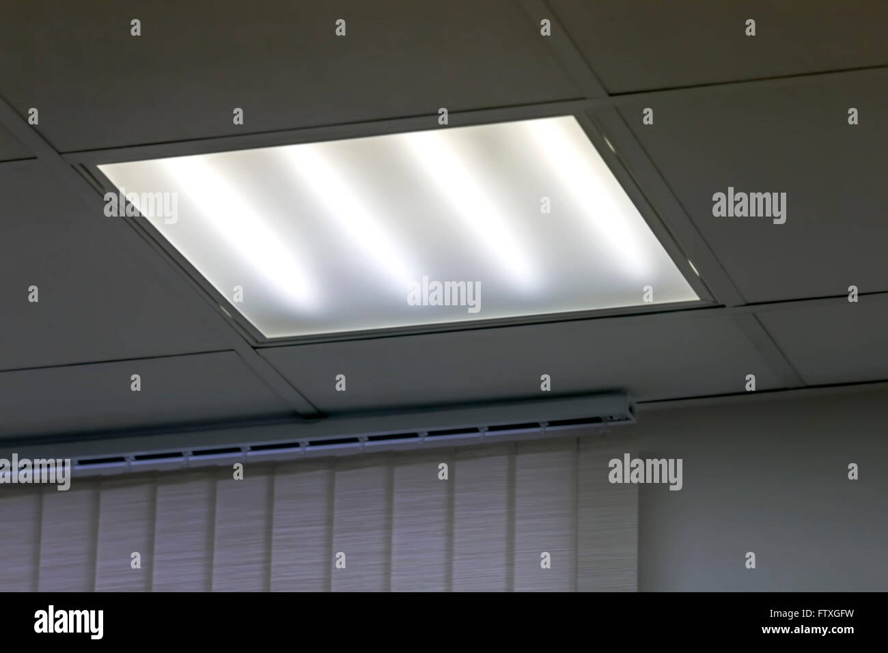
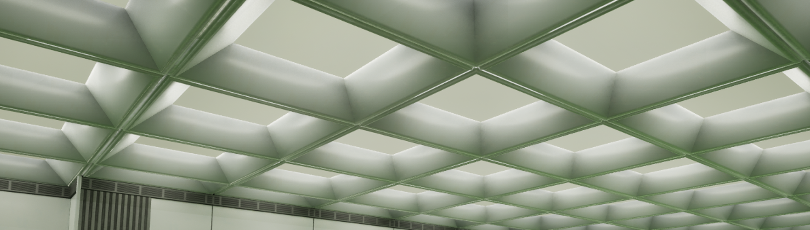
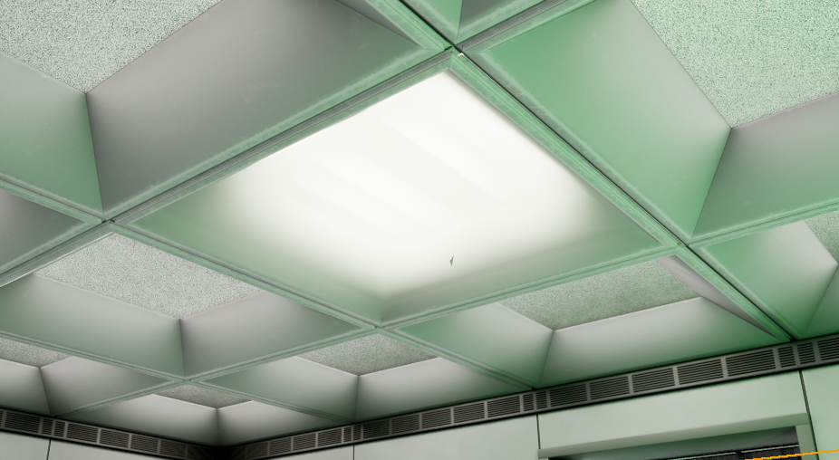
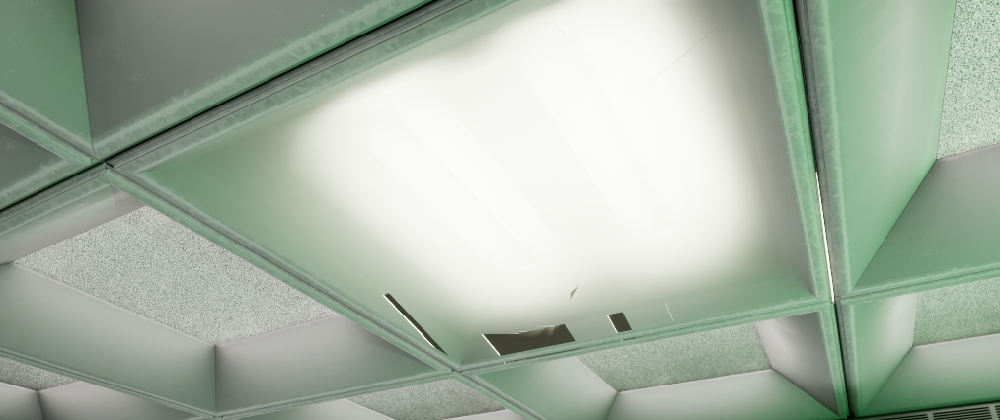
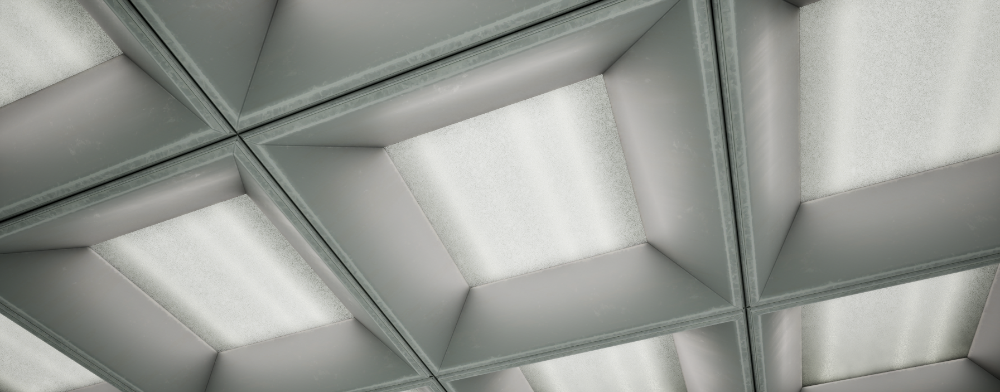

Section Header
For a good while I've been working towards my newest environment piece, while I don't want to give too much away before I publish it as a portfolio piece, I'm sure many will be able to identify what I'm working on from the screenshots in this post.
From the very beginning of this project I've been working to improve the effectiveness of my lighting and the apparent quality of the light fittings themselves is a part of that. In office buildings, often fitted with overhead fluorescent lighting, you will typically see a layer of frosted plastic that diffuses the lights above. It's an effect I've been working to reproduce for some time, to various degrees of success. Since UE5 is a real time engine, it can struggle with this specific type of material effect. As a result I had to try several different solutions before I settled on the one I found to be most effective.

Overhead Lighting Example - alamy
The above example shows roughly the effect I was aiming to achieve. You can see the fluorescent light bulbs show through the diffused plastic, like the blurred reflection in a rough surface. To mimic this effect I first tried to use a masked translucent material with a noise map in the place of a mask, hoping that this would allow me to essentially fake the effect through the dithered opacity. Unfortunately, this effect was not exactly the effect I was aiming for. The opacity was too severe, showing too much of the bulb without any diffussion to be seen. I then tried to simply use a flat emissive texture, that when used in conjunction with the proper lighting could have given me the effect I was hoping for, or at least this was the hope. You can see the effect of this in the image below.

Emissive Example
This effect, while better than the previous masked opacity attempt, still didn't achieve my desired result. Being too uniform in its emissive values, and appearing overly flat. In an attempt to fix this issue, I turned my attention to substrate materials. Substrate materials are currently an experimental feature within UE5.6 (which is the version I am using), restoring IOR and being great for glasslike translucent materials. There was a hope that this would be the solution I had been hoping for. If I were using UE5.7 I may have managed to get this working as intended since it has since seen full release. My attempts to use it in 5.6 were very close to giving me the effect I wanted.


In the above images you can see the issue I came to have with this method. The frosted effect was very close to what I wanted, but seemed to cull near the frame of the light fixture, going entirely transparent. Similarly, it appears to be a screenspace effect, and the further away the camera went from the material, the worse the culling became. It also appeared to me that IOR is still broken as it was in UE4. You can always identify an Unreal Engine game by its use of refraction, which has always refracted incorrectly to show geometry in front of the "glass" at certain angles. I've seen this in published games several times in the past, most recently in "Still Wakes the Deep" where you could clearly see this broken effect in the oil rig's control room.
To troubleshoot this issue, I attempted to make the "shroud" thicker, and lowered it further than before, also using a subdivided cube to see if vertex density had any impact on the effect. Sadly, this didn't fix all the issues, fixing the edge culling issue but introducing more pronounced IOR errors.


As can be seen above, the effect looked great from a certain angle, but had a very apparent IOR bug when the camera approaches too close to the fitting. It was a disapointing result, but as it's still experimental in this version, I will have to do some tests once this piece is done to see if these errors have been remedied in the newest version of the engine.
So, the substrate was a bust. In times like these you have to think of Occam's Razor. "The best solution is usually the simplest one". While the experience of using the substrate material was valuable in that I have developed familiarity with the new features, I decided to try a simpler, and ultimately more performant solution. I opted to somewhat fake the effect. To do so I created a gradient texture, that had dim edges. This was plugged into a default lit, subsurface material. The hope being that the subsurface, when used in conjunction with the dithered effect of the gradient, would create a convincing enough effect. I plugged the gradient texture into both Base Colour and Emissive Colour, which further pronounced the readability of a light diffuser. To give the diffuser a less smooth apperance, I put a noise node into the normal, which gave the shrouds a slightly grainy appearance. When these effects came together the effect is about as close to perfect as I can reasonably hope to achieve. There is more investigation to be done for future projects on other ways that I can create this effect. I had considered using paralax occlusion for it as I had for room interiors in previous projects, but since this effect satisfied my requirements I chose to not fix what isn't broken.

Subsurface Example
Overall, I'm fairly happy with how this effect came out, it's convincing enough for what is unlikely to be a focal point of the scene. Enviroments are a holistic artform where even the smallest elements come together to create the atmosphere and immersion in a scene. I should hopefully have more to discuss on this project in coming weeks. Thank you for reading.